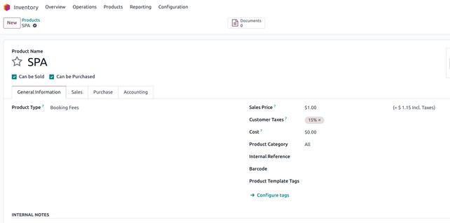
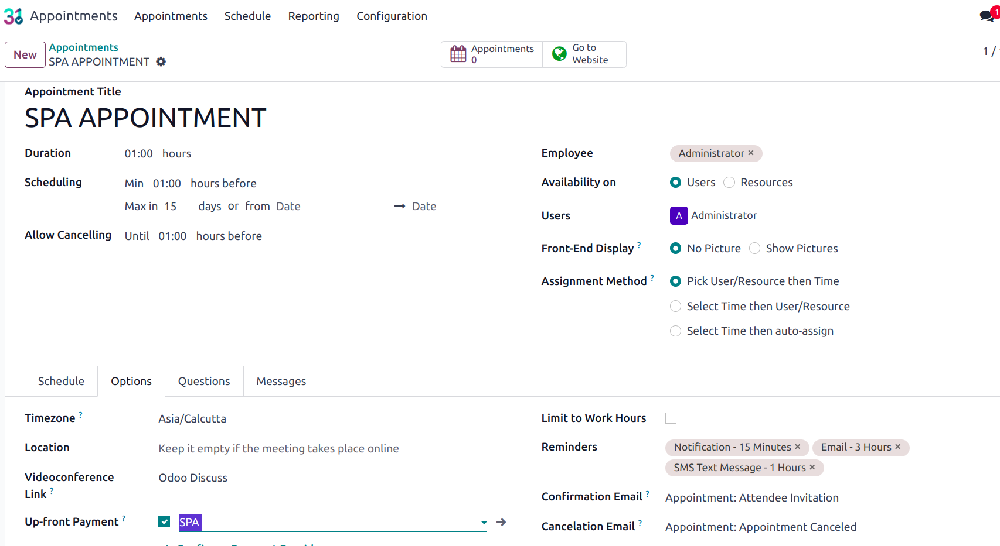
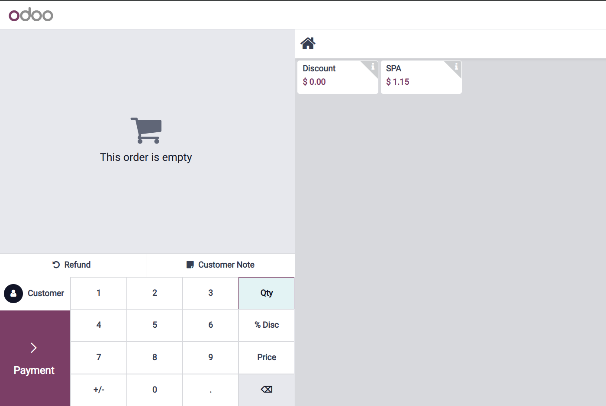
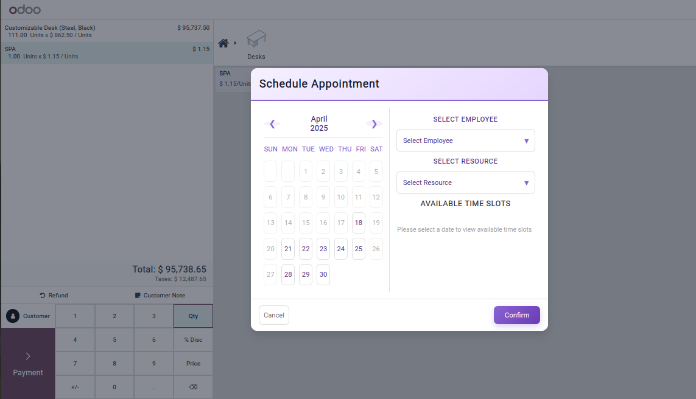
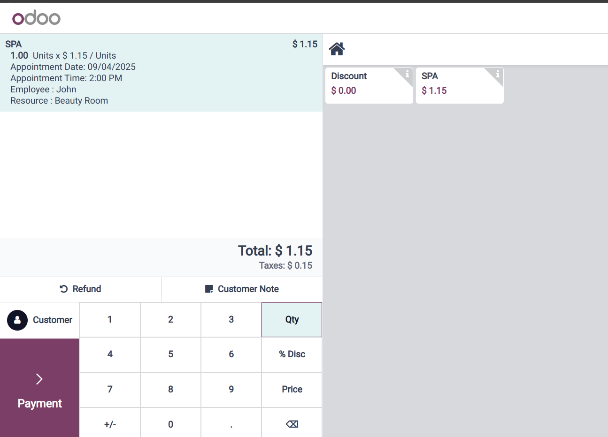
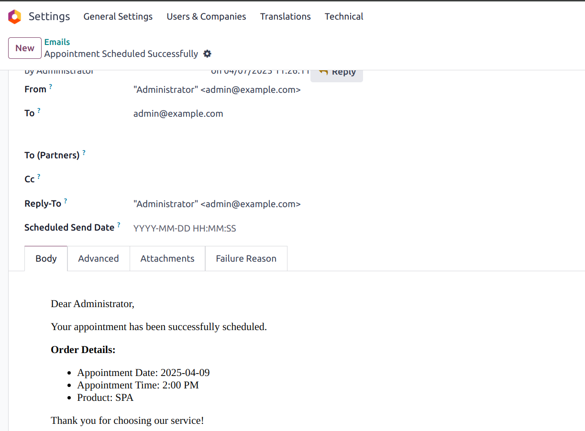
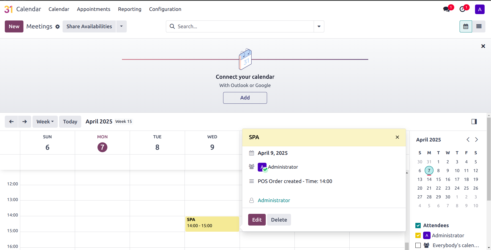
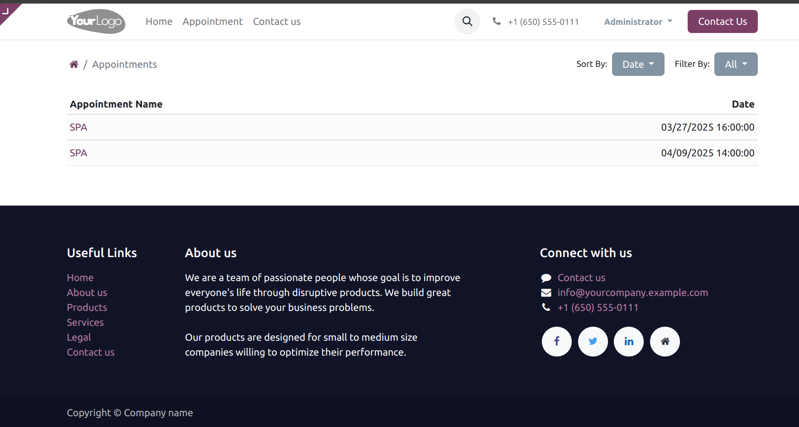

Product Configuration: Booking Fees

- Navigate to Sales > Products and create a new product.
- Set the Product Type to Booking Fees.
- Enable the Available in POS option to ensure visibility in the POS interface.
|
Appointment Setup

- Access the Appointments module and create a new appointment record.
- Under the Upfront Payment field, select the newly created product.
- Assign the relevant Employee and Resource to the appointment.
- Specify the Scheduled Date and Time for the appointment.
|
POS Interaction – Appointment Booking Flow

- During an active POS session, upon selecting the product (for products having an appointment):
- A modal popup will be triggered to facilitate appointment booking.
- The popup interface will allow:
- Calendar View for selecting a date
- Selection of available Resources
- Display of the assigned Employee
- Available Time Slots based on selected criteria
- Once the date and time slot are confirmed, the appointment data is linked with the POS order.
|
|

|
POS Order Line Enhancements

- The POS Order Line will be augmented to include the following appointment-related metadata:
- Appointment Date
- Appointment Time
- Assigned Employee (Concierge)
- Selected Resource
|
Customer Communication

- Upon finalizing the POS order:
- An automated email notification will be sent to the customer.
- Email contents will include:
- Appointment Date and Time
- Product Information
|
Appointment Creation in Calendar

- An appointment entry will be created in the Calendar module.
- The entry will reflect the selected Date and Time of the booking.
- This helps in tracking and managing upcoming appointments efficiently.
|
Appointment Visibility in Profile Section

- Appointments are available in the Profile section:
- Each appointment entry will provide Scheduled Date & Time
|